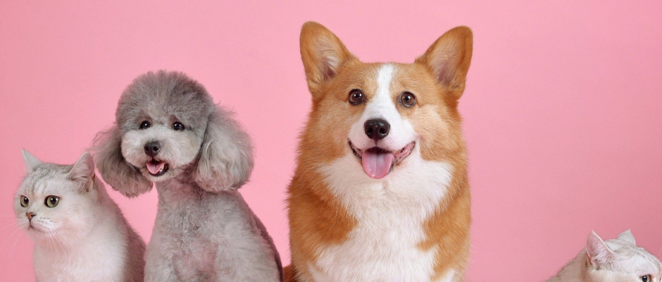

Sobre
A ONG Patinha de Anjo é uma Organização Beneficente sem fins lucrativos, fundada no ano de 2017. A ONG atua a favor da causa animal, principalmente no que tange ao convívio saudável entre seres humanos e animais. Ou seja, trabalhamos contra maus tratos, e temos como responsabilidade ajudar os animais em situação de risco, fome e até mesmo contrabando. Uma das principais propostas da ONG é disseminar a informação sobre essas questões, formando pensamentos críticos, emitindo opiniões e influenciando na transformação de hábitos das pessoas. Além de idealizar e executar eventos que incentivem a adoção de animais, bem como na doação de materiais como ração e remédios. Contamos também com uma equipe de voluntários que atuam no atendimento médico veterinário para animais, prestando todo o auxílio em tratamento de ferimentos, também na castração a fim de proporcionar maior segurança e qualidade de vida aos animais. A ONG Patinha de Anjo acredita no poder da mudança da sociedade no que tange à proteção animal, procurando criar tendências e inovações, padrões de consumo e mudar comportamentos.